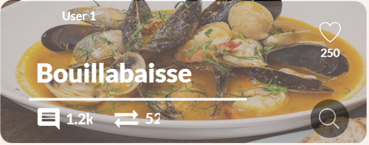

×



The dish originates in ancient Greece. The Phoceans, an Ancient Greek people who founded Marseille in 600 BC, ate a simple fish stew known in Greek as "kakavia". A dish similar to bouillabaisse also appears in Roman mythology: it is the soup that Venus fed to Vulcan.
The legend has it that bouillabaisse was created by Marseille fishermen who wanted to make a meal when they returned to port. Rather than using the more expensive fish, they cooked the common rockfish and shellfish that they pulled up with their nets and lines, usually fish that were too bony to serve in restaurants, cooking them in a cauldron of water on a wood fire and seasoning them with garlic and fennel. Tomatoes were added to the recipe in the 17th century, after their introduction from the Americas.
In the 19th century, as Marseille became more prosperous, restaurants and hotels began to serve bouillabaisse to upper class patrons. The recipe of bouillabaisse became more refined, with the substitution of fish stock for boiling water and the addition of saffron. Bouillabaisse spread from Marseille to Paris, and then gradually around the world, adapted to local ingredients and tastes.
The name bouillabaisse comes from the method of the preparation — the ingredients are not added all at once. The broth is first boiled then the different kinds of fish are added one by one, and each time the broth comes to a boil, the heat is lowered.
What you need to make Bouillbaisse
(makes 6 Servings):
2 baby fennel
60ml (1/4 cup) extra virgin olive oil
1 large onion, finely chopped
1 stalk celery, finely chopped
6 cloves garlic, finely chopped
2 leeks, white part only, finely chopped
1 teaspoon fennel seeds, crushed
1/4 teaspoon firmly packed saffron threads
1.75L (7 cups) fish stock (see related recipe)
1kg ripe tomatoes
2 tablespoons tomato paste
2 Masterfoods Bay Leaves
4 sprigs thyme
1/2 orange, peeled into strips
1 pinch cayenne pepper
60ml (1/4 cup) Pernod (see note)
2 x 600g whole john dory fish, (see note) filleted, halved lengthwise
2 x 700g whole flathead fish, (see note) filleted, cut into 6cm pieces
16 large green king prawns, peeled with tails intact, cleaned
4 scampi, halved lengthwise
400g black mussels, scrubbed, bearded
400g clams (vongole), soaked in cold water for 15 minutes
Thinly sliced baguette, (brushed with oil and toasted), to serve
Rouille to serve
How to make your Bouillbaisse:
1. Trim fennel tops, reserving trimmings for stock and fronds for serving, and chop fennel finely. Heat oil in a large saucepan or casserole over medium heat. Add fennel, onion, celery, garlic, leeks and fennel seeds, and cook, stirring occasionally, for 10 minutes or until vegetables soften.
2.
Meanwhile, combine saffron and 125ml (1/2 cup) fish stock in a small bowl and set aside for 10 minutes to steep..
3. Peel tomatoes, remove seeds and discard, then chop finely. Add tomato paste to vegetables in pan and cook, stirring, for 1 minute. Add the saffron mixture, tomatoes, bay leaves, thyme, orange peel and the remaining stock to the pan and simmer for 30 minutes. Season generously with salt. Stir in cayenne and Pernod. Reserve 2 tablespoons broth for rouille.
4. Add the fish to the pan, then prawns and scampi, making sure the seafood is submerged in the liquid. Cook for 5 minutes or until seafood is just cooked. 5 Meanwhile, place mussels, clams and 2 tablespoons water in a frying pan over high heat. Cover with a lid and cook, shaking the pan occasionally, for 3 minutes or until the shells open.
5. Divide bouillabaisse among bowls. Top with clams and mussels and scatter with reserved fennel fronds. Serve with toasts and rouille.